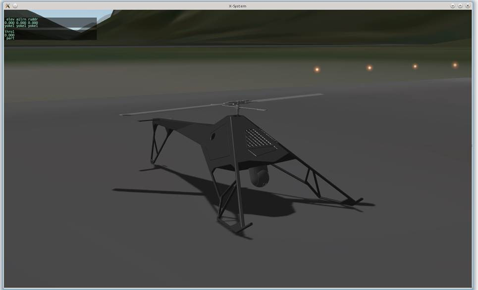

Комплекс «ГЕОДЕЗИЯ-В» с беспилотным летательным аппаратом автоматического взлета и посадки ТБ-29В
Беспилотный летательный аппарат ТБ-29В – это высокоскоростной, с расширенным временем полета, портативный вертолет с бензиновым двигателем.
Взлет, полет по маршруту и посадка проводятся в автоматическом режиме.
Возможность полуавтоматического и ручного управления.
Возможность автоматической работы с полезной нагрузкой.
Аварийные режимы работы.
Система включает в себя:
- Беспилотный летательный аппарат ТБ-29В
- Командный модуль беспилотного воздушного комплекса «ГЕОДЕЗИЯ-В»
- Виртуальный симулятор как часть программного обеспечения наземной станции
Беспилотный летательный аппарат ТБ-29В
ПрименениеВертолёт ТБ-29В применяется для:
- Видеонаблюдения и мониторинга
- Доставка полезной нагрузки (макс. 5 кг)
- Постановка помех
- Расширения диапазона радиосвязи, ретрансляция
- Подсветка цели и определение координат цели
- Научно-исследовательская летающая лаборатория (метеорология, гидрология и т. д.)
Носитель применяется как часть комплекса «ГЕОДЕЗИЯ-В». Беспилотный летательный аппарат эксплуатируется в следующих условиях:
| Параметры | Значения |
|---|---|
| Диапазон рабочих температур | -25 °С — +45 °С |
| Базирование | Зона взлета и посадки - 5X5м |
| Режимы управления 1. основной 2. вспомогательный 3. резервный 4. аварийные ситуации |
Полностью автоматический Полуавтоматический Ручной (Дистанционное управление) Аварийный |
| Взлет и посадка | Полностью автоматические |
| Аварийная посадка | Авторотация или парашют |
| Наземные средства посадки | Не требуются |
| Запуск двигателя | Ручной запуск (ручной электростартер) |
| Хранение | 1. Вертолет в контейнере - 49 кг 2. Портативная наземная станция управления (ПНСУ) в кейсе - 28 кг 3. Камера CM100 – 0.7 кг или OTUS-U135 – 1,2 кг. |
ТБ-29В характеристики
| Параметры | Значения |
|---|---|
| Максимальная крейсерская скорость | 100 км/ч |
| Максимальная скорость | 120 км/ч |
| Расход топлива в крейсерском режиме | 1,2 л/ч |
| Длина | 1600 мм |
| Диаметр главного ротора | 1865 мм |
| Высота | 550 мм |
| База шасси | 320 мм |
| Тип двигателя | двухтактный |
| Мощность двигателя | 7,2 л.с. |
| Объем топливного бака | 8 л |
| Полезная нагрузка при полном топливном баке | 0.7 кг |
| Максимальная взлетная масса | 19,6 кг |
| Максимальная скороподъемность | 6 м/с |
| Максимальная скорость ветра при взлете и посадке | 14 м/с (27 узлов) |
| Практическая дальность | 500 км |
| Практический потолок | 2800 м, с впрыском - 5000 м |
| Время полета | до 5 часов, с впрыском до 7 часов |
| Парашют | Баллистический |
| Бортовое питание | 7,4 В |
| Авторотация | да |
| Высотомер | радио, лазерный, ультразвуковой |
| Межсервисный интервал | 100 ч |
| Межремонтный срок | 500 ч |
Портативная наземная станция управления (ПНСУ)
Применение
Командный модуль беспилотного воздушного комплекса «ГЕОДЕЗИЯ-В» предназначен для размещения:
- Оборудование для связи и управления
- Оператора беспилотной воздушной системы и оператора полезной нагрузки
- Оборудование для технической поддержки беспилотной воздушной системы
- Всенаправленная антенна для телеметрии и управления
- Всенаправленная антенна для видео и данных

| Параметры | Значения |
|---|---|
| Диапазон рабочих температур | -40 °C – +60 °С |
| Габариты | Длина 1200 мм, ширина 415 мм, высота 224 мм |
| Автоматические рабочие места | 2 |
| Ресурс батареи НСУ | 6 ч. |
Программное обеспечение и автоматическая система управления беспилотным летательным аппаратом ТБ-29В
Основные функции САУ9.2 (автоматической системы управления движущихся объектов):
- автоматическое управление подвижным объектом
- управление исполнительными механизмами
- управление двигателем
- полуавтоматическое управление с автоматической стабилизацией подвижного объекта
- ручное управление через основной канал связи 928 мГц
- с пульта станции контроля и управления
- управление подвижным объектом в аварийном режиме
- управление и мониторинг полезной нагрузки
- прием, передача телеметрии между станцией управления и подвижным объектом на расстояние до 100 км
- возможность счисления координат (расчета текущего положения) при потере сигнала GPS
- подробная телеметрия позволяющая в режиме реального времени контролировать состояние всех систем аппарата, параметры движения, метеоусловия и др.
- возможность исполнения клиентского кода и подключения плагинов
- система является распределённой, что позволяет продолжать работу при выходе из строя отдельных модулей, также возможно дополнительное дублирование для повышения отказоустойчивости
- самодиагностика системы
- тестирование полетного задания перед полетом
- режим симуляции (тренажер)
- обучение оператора в авиационном симуляторе с загрузкой виртуальной модели ЛА
- управление бортовым питанием
- стабилизация питания
- преобразование
- распределение, в том числе режим аварийного электроснабжения
- мониторинг бортового питания
Программное обеспечение и автоматическая система управления беспилотным летательным аппаратом ТБ-29В
Карты для загрузки:
- По умолчанию (демо-версия без ограничений) Google maps. Необходимо купить лицензию для применения коммерческой версии.
- Возможна загрузка карт с ссылкой по координатам.
- Фрагмент ввода полетного задания
{kind=link}
- Фрагмент анализа телеметрии
{kind=link}
Телеметрия
- Контроль всех параметров беспилотного летательного аппарата с момента включения оборудования на земле и в полете
- Передача данных телеметрии в реальном времени на наземную станцию управления
- Передача пакета данных в случае восстановления связи
- Запись данных на флэш память автопилота
- Простой и удобный анализ телеметрии
- Обзор полета на симуляторе для визуализации поведения ВС в полете
Обслуживание
Обслуживание комплекса может быть выполнено как на производственной базе Заказчика, так и на территории оператора.
Контроль программного обеспечения и тестирование всех систем могут быть выполнены дистанционно через Интернет.
Любые обновления загружаются автоматически сразу после подсоединения системы к интернету, при условии что эта услуга активирована.
Обучение
Обучение специалистов Заказчика включает следующие курсы:
- Оператора беспилотного летательного аппарата
- Оператора полезной нагрузки
- Инженера беспилотного летательного аппарата
Виртуальный симулятор
Система оснащена виртуальным симулятором. Симулятор позволяет проводить обучение специалистов, квалифицированное обслуживание и практическую отработку режимов полета при различных погодных условиях.

Документация
- Полный пакет документации по эксплуатации и обслуживанию беспилотного летательного аппарата
- Мануал по системе автоматического контроля
{kind=link}
{kind=link}
{kind=link}